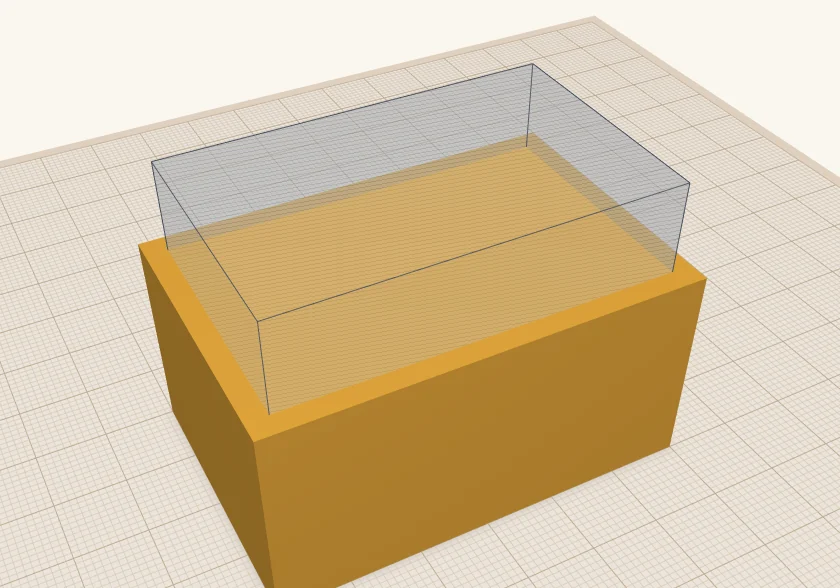
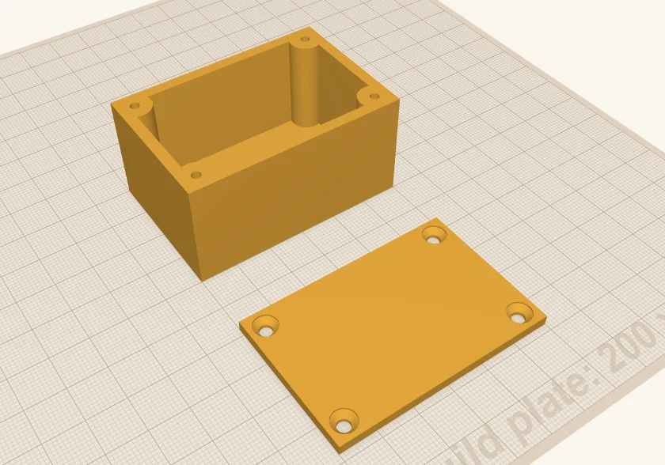
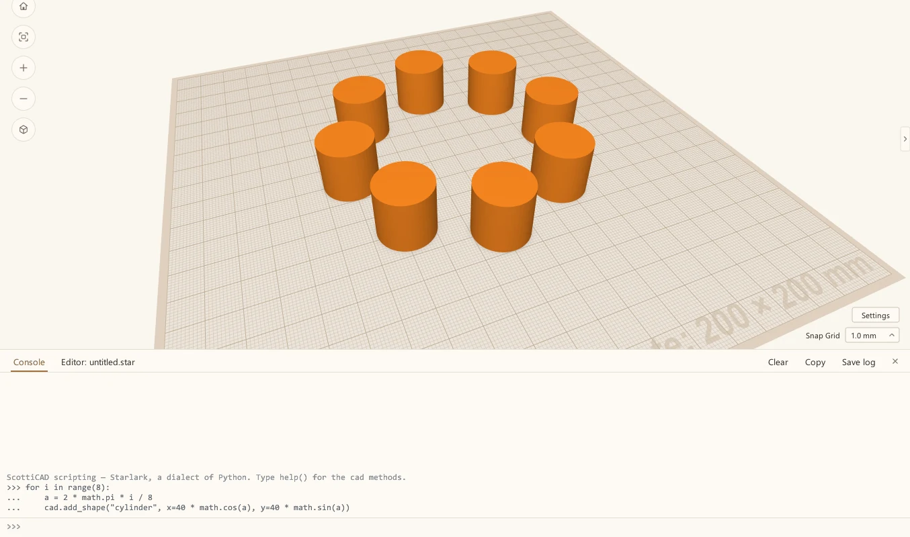
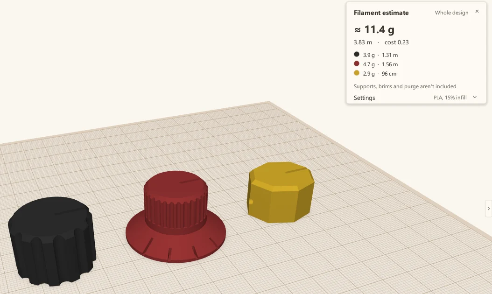
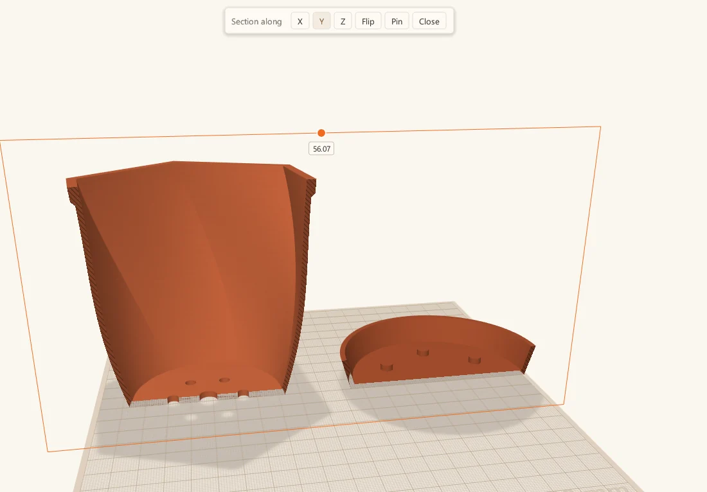

Why I wrote ScottiCAD
My designs lived in somebody else's cloud, until an update broke half a dozen of them. So I built a CAD program that runs on my own computer.
 Scotti
Scotti
· 3 min read
I've been a 3D maker for about ten years. Most of what I print is simple, functional stuff: brackets, boxes, jigs, cases, tools. There are plenty of CAD programs out there, but for parts like these you usually don't need much. Nearly all of them can be built from a few basic shapes, added together or cut out of each other.
Take a project box. It's a rectangular block with a slightly smaller rectangular block subtracted from it. That's the whole design.
Want a lid you can screw down? Same trick. A cylinder in each corner makes a post for a screw, a thinner hole cylinder in each post makes a pilot hole, and the lid is a thin box with four countersunk holes over the posts. M3 screws go straight into the plastic. It's still nothing but boxes, cylinders and holes. (I walk through it step by step in How I build a project box.)


Before After
My designs lived in somebody else's cloud
The program I'd been using kept everything in the cloud. I could download an STL, sure. But the design itself, all the shapes and holes I'd built that STL from, only existed in their web portal. That came with strings attached:
No internet, no designs
If my connection was down, I couldn't get to my own work.
Their outage, my problem
If their service was down, same deal.
Updates I didn't ask for
When they changed the software, I got the new version, like it or not. One update broke half a dozen of my designs.
Features come and go
If they took away something I used, or added something I didn't want, I had to live with it.
ScottiCAD runs on your computer
ScottiCAD isn't like that. It runs on your Windows or Linux computer. Locally. Your designs are saved on your computer. Locally. You don't upgrade unless you want to.
It's free, and it's open source. You can install it today and keep it forever.
Runs locally
No server, no sign-in, no internet connection needed.
Your files
Designs are ordinary files, in folders you choose.
Upgrade when you want
Keep the version that works for you for as long as you like.
Free and open source
Apache-2.0 licensed. Use it for anything.
Scripting, because I'm a programmer
I'm also a programmer, so I built ScottiCAD with scripting in mind from the start. It has a built-in language called Starlark, a dialect of Python. If you can write Python, you can write Starlark: loops, functions, lists and dicts all work the way you'd expect. (There are no classes or imports, but you won't miss them when you're building a bracket.)
Why not just use Python? Two reasons. Python is big, and I wanted ScottiCAD to stay small. And Starlark is locked down by design. A script can't break out of ScottiCAD and mess with the rest of your computer, so a buggy script, or one you found online, can't do any damage.

That means I can build a design with code whenever it's easier than the mouse: a row of holes, a ring of pegs, or a part whose sizes I know I'll want to tweak later.
Tools for people who actually print
Last, ScottiCAD has tools aimed at people who print what they design.
Filament estimate
How much filament a design will use, and roughly what it'll cost, before you ever open your slicer.

Section view
Slice through a model, the way a slicer does, so you can see inside it and check your walls.

Lay flat
Click any face of a part, and ScottiCAD turns it so that face sits flat on the build plate, ready to print.
Built by a maker, for makers.
More from Scotti's Corner
- Raspberry Pi mounts that line up the first time 25 October 2026
- How I build a project box 24 October 2026